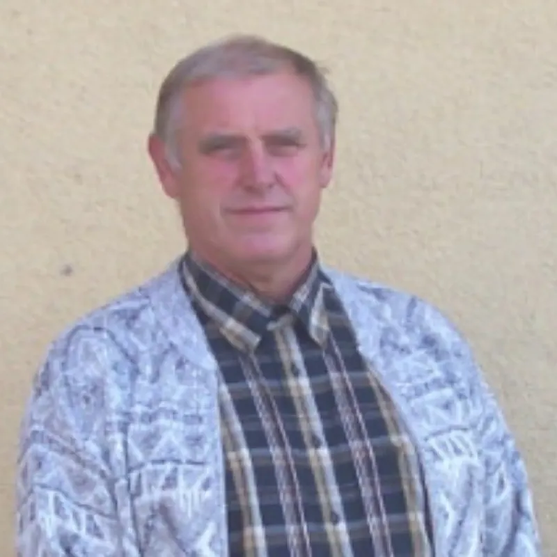

Dietmar Tübel
Dachdeckermeister · Gründer
1Erste Generation
Vom Handwerk zum eigenen Betrieb
Mein Vater, Dietmar Tübel, erlernte 1962 das Dachdeckerhandwerk. Nach erfolgreichem Abschluss seiner Meisterprüfung im Jahr 1976 gründete er 1977 seinen eigenen Betrieb in Lichtenberg bei Pulsnitz. 1986 erfolgte der Umzug nach Rammenau in die Oberrammenauer Straße.
In den 1990er Jahren stieg das Auftragsvolumen stetig an, sodass der Platzbedarf wuchs. Mit Blick auf die zukünftige Entwicklung des Unternehmens – und auch im Hinblick darauf, dass ich das Handwerk weiterführen wollte – fiel 1999 die Entscheidung zur Umsiedlung in das Gewerbegebiet Rammenau.